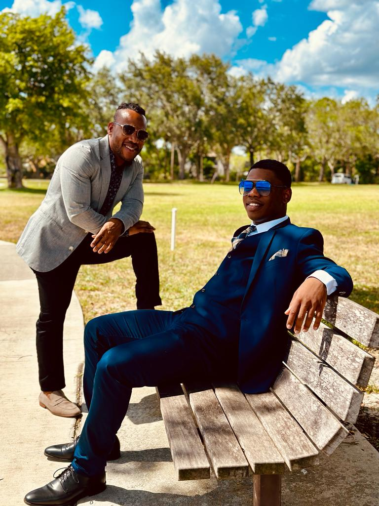

Evens Jules
The Steady One

A presence you can lean on.
Gallery

A moment rooted in history and connection, with my mother and her brother. Three people, one shared past, and the quiet comfort of being exactly where you’re meant to be.
My father’s 42nd birthday, a celebration that felt bigger than the occasion, filled with gratitude, pride, and love.
My sister’s Sweet 16, a milestone filled with pride, joy, and love. Watching her grow, surrounded by family who have loved her every step of the way.
Oldines’ son’s birthday — a room filled with laughter, love, and the quiet joy of watching a child grow. Moments like these remind you that celebration isn’t just about age, it’s about presence.
Moving off to college, a difficult moment for any father, watching their baby boy grow up.
A shared moment beneath a Parisian sky — simple, tender, and timeless. Proof that love doesn’t need words when the setting already feels like a dream.